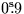
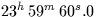
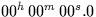

Universal Time UT, or more specifically UT1, is in effect the mean solar time. It is continuous (i.e. there are no leap seconds) but has a variable rate because of the Earth's non-uniform rotation period. It is needed for computing the sidereal time, an essential part of pointing a telescope at a celestial source. To obtain UT1, you have to look up the value of UT1-UTC for the date concerned in tables published by the International Earth Rotation Service; this quantity, kept in the range  by means of UTC leap seconds, is then added to the UTC. The quantity UT1-UTC, which typically changes by 1 or 2 ms per day, can only be obtained by observation, though seasonal trends are known and the IERS listings are able to predict some way into the future with adequate accuracy for pointing telescopes.
UTC leap seconds are introduced as necessary, usually at the end of December or June. On the average the solar day is slightly longer than the nominal 86,400 SI seconds and so leap seconds are always positive; however, provision exists for negative leap seconds if needed. The form of a leap second can be seen from the following description of the end of June 1994:
| UTC | UT1-UTC | UT1 | |||
| 1994 | June | 30 | 23 59 58 | -0.218 | 23 59 57.782 |
| 23 59 59 | -0.218 | 23 59 58.782 | |||
| 23 59 60 | -0.218 | 23 59 59.782 | |||
| July | 1 | 00 00 00 | +0.782 | 00 00 00.782 | |
| 00 00 01 | +0.782 | 00 00 01.782 |
Note that UTC has to be expressed as hours, minutes and seconds (or at least in seconds for a given date) if leap seconds are to be taken into account. It is improper to express a UTC as a Julian Date, for example, because there will be an ambiguity during a leap second (in the above example, 1994 June 30  and 1994 July 1  would both come out as MJD 49534.00000). Although in the vast majority of cases this won't matter, there are potential problems in on-line data acquisition systems and in applications involving taking the difference between two times. Note that although the routines sla_DAT and sla_DTT expect UTC in the form of an MJD, the meaning here is really a whole-number date rather than a time. Though the routines will accept a fractional part and will almost always function correctly, on a day which ends with a leap second incorrect results would be obtained during the leap second itself because by then the MJD would have moved into the next day.
SLALIB --- Positional Astronomy Library